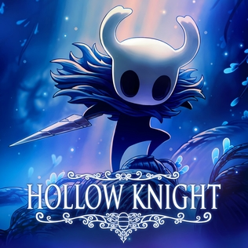
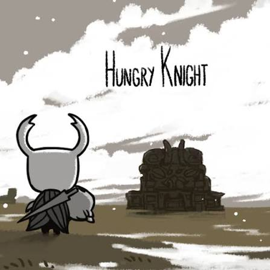
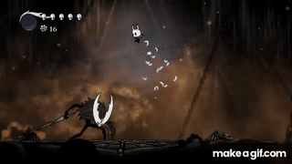

Hollow Knight is a 2017 Metroidvania video game developed and published by Australian independent development studio Team Cherry. The player controls a nameless insectoid warrior (commonly known as "The Knight") in exploring Hallownest, a fallen kingdom plagued by a supernatural disease. The game is set in diverse subterranean locations, featuring friendly and hostile insectoid characters and numerous bosses. Players have the opportunity to unlock abilities as they explore, along with pieces of lore and flavour text that are spread throughout the kingdom. Hollow Knight was well-received by critics, with particular praise for its music, art style, worldbuilding, atmosphere, combat, and level of difficulty. It has since been regarded by some critics as one of the greatest games of all time. The game has sold more than 15 million copies. A sequel following major character Hornet, Hollow Knight: Silksong, was released in 2025 to commercial success and critical acclaim.
The concept behind Hollow Knight was conceived in 2013 in the Ludum Dare game jam. Adelaide-based Team Cherry—founded by artist Ari Gibson and web designer William Pellen—wanted to create a game inspired by older platformers that replicated the explorational aspects of its influences. Inspirations for the game include Faxanadu, Metroid, Zelda II: The Adventure of Link, and Mega Man X. Development was partially funded through a crowdfunding campaign that raised over A$57,000 by the end of 2014. It was released for Linux, macOS, and Windows in early 2017, for the Nintendo Switch, PlayStation 4, and Xbox One in 2018, and for the Nintendo Switch 2, PlayStation 5, and Xbox Series X/S in 2026. Between 2017 and 2018, four free downloadable expansions were released.

The idea that prompted the creation of Hollow Knight originated in a game jam, Ludum Dare 2013, in which two of the game's developers, Ari Gibson and William Pellen, developed a game called Hungry Knight, whose main character's design eventually became the protagonist in Hollow Knight, kills bugs to stave off starvation. The game, considered "not very good", used to hold a 1/5 star rating on Newgrounds, but has since increased to 4/5. The developers decided to work on another game jam with the theme "Beneath the Surface", but missed the deadline. However, the concept gave them the idea to create a game with an underground setting, a "deep, old kingdom", and insect characters.
Influences for the game include Faxanadu, Metroid, Zelda II: The Adventure of Link, and Mega Man X. Team Cherry noted that Hallownest was in some ways the inverse of the world tree setting in Faxanadu. The team wanted to replicate the sense of wonder and discovery of games from their childhood from such games, in which there "could be any crazy secret or weird creature." Believing that control of the character was most important for the player's enjoyment of the game, the developers based the player's movement on Mega Man X. They gave the character no acceleration when moving horizontally, as well as a large amount of aerial control and the ability to interrupt one's jump with a dash. This was meant to make the player feel that any hit they took could have been avoided right up until the last second.
To create the game's art, Gibson's hand-drawn sketches were scanned directly into the game engine, creating a "vivid sense of place". The developers decided to "keep it simple" in order to prevent the development time from becoming extremely protracted. The complexity of the world was based on Metroid, which allows players to become disoriented and lost, focusing on the enjoyment of finding one's way. Only basic signs are placed throughout the world to direct players to important locations. The largest design challenge was creating the mapping system and finding a balance between not divulging the world's secrets while not being too player-unfriendly.

Hollow Knight is a 2-dimensional side-scrolling Metroidvania. The player controls a silent insectoid warrior who explores an underground fallen kingdom called Hallownest. The player character can strike enemies with a sword-like Nail and can learn spells that allow for long-range attacks. The player has a limited number of hit points, which are represented by masks. By striking enemies, the player character gains Soul, which is stored in a "Soul Vessel". Initially, the player can only use Soul to "Focus" and regenerate masks, but as the game progresses, players unlock and collect several offensive spells, which consume Soul. Soul can also be used for some charms which are in-game boosters that help The Knight. If all masks are lost, the player dies, and a Shade appears at the approximate location of the player's death, marked on the map. The player loses all Geo, the game's main currency, and can only hold a reduced amount of Soul; they must defeat the Shade to recover lost Geo and regain their lost Soul capacity. If the player dies before the Shade is defeated, a new Shade appears, erasing the previous one alongside the Geo it was holding.
During the game, the player encounters bug-themed non-player characters (NPCs) with whom they can interact. These characters provide information about the plot, offer aid, and sell items or services. Players acquire items that provide movement abilities including an additional mid-air jump, adhering to and jumping off walls, or a dash. To further customise the Knight, players can equip various charms, which can be found or purchased from NPCs. Some of their effects include improved combat abilities, such as granting the player more range with the Nail, or allowing them to collect Soul more easily. Equipping a charm takes up a certain number of limited slots, called charm notches. Many areas feature challenging enemies and bosses that the player may need to defeat to progress. Defeating some bosses grants the player access to new abilities. If the player defeats the final boss, they are given access to a game mode called "Steel Soul". In this mode, dying is permanent, i.e. if the player loses all of their masks, the save slot will be reset. The kingdom of Hallownest consists of several large, interconnected areas with unique themes. With its nonlinear gameplay Metroidvania design, Hollow Knight does not restrict the player to one path nor require them to explore the whole world; there are places that can be missed when finishing the game. The player may need to acquire a specific movement ability, skill, or item to progress further, at certain points. To fast travel through the world, the player can use progressively-unlocked Stag Stations, terminals connected to a network of tunnels that are traversed via a giant stag beetle.